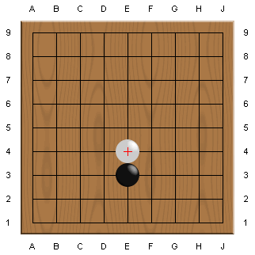
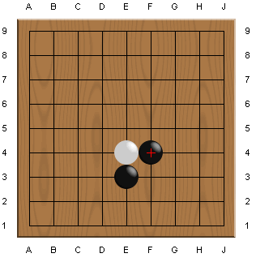
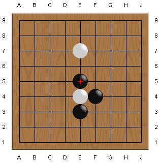
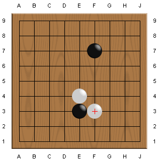

Table Of Contents
Table Of ContentsHere, you will learn some practical techniques needed when you start a real game.
You are black, as always.
White puts a stone very close to you - this move is called "attach"
or "contact play".
How should you respond to the touch?

In this case, the black's move shown below is good.
This move decreases the white stone's liberties from 3 to 2.
It's almost as if black is giving white a slap in the face.
Attack the attacker!

Continuing from above, if white played somewhere else like E7, black
can continue attacking the white stone as below. Now the E4 stone is
in Atari - with one more move, you can capture it.

Continuing from the first figure, if black doesn't respond to white's touch and plays somewhere else like F7, how would white play?
White will keep attacking by giving black a slap in the face.
Can you see that black E3 is in trouble?

Finally, it's time to practice.
White has just touched your stone.
There are two right answers. Find both of them!
Isn't it just too easy?
 Next
Next
 Home
Home